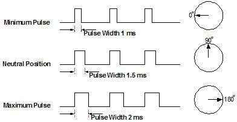

Servo Motors
Servo Motor Control via SQR1 - 4
The rotation angle of limited range servo motors can be controlled via Pulsed Width Modulated(PWM) input waveforms. The angle of rotation is a function of the duty cycle of the PWM waveform as shown in the following figure

SQR1 to SQR4 outputs are capable of inpedendent frequency and duty cycle control, and these can be used to independently control up to four servo motors.
Since high torque servos require high currents which the USB port may not be able to provide, they may need to powered with a separate power source. In such cases the ground connector (Black/-Ve terminal) must also be connected with any of the GND pins ( so that the control signal from SQR has a return path ).